Una vez tenemos hecha la cuenta en Odoo crearemos una base de datos para que se guarde la información que registraremos en nuestra página web.
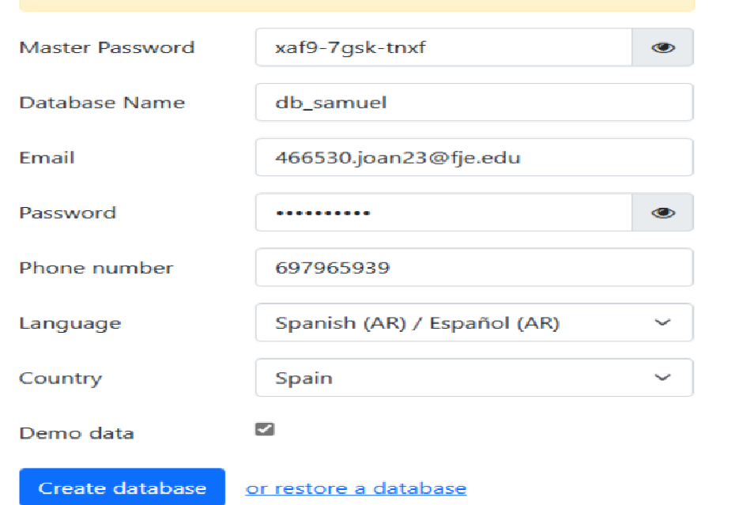Cuando hayamos creado nuestra cuenta y nuestra base de datos iniciaremos sesión y nos llevará a una página desde donde podemos elegir los módulos a instalar. Estos módulos permiten que nuestra página sea interactiva y funcional. Podemos añadir tantos como queramos. 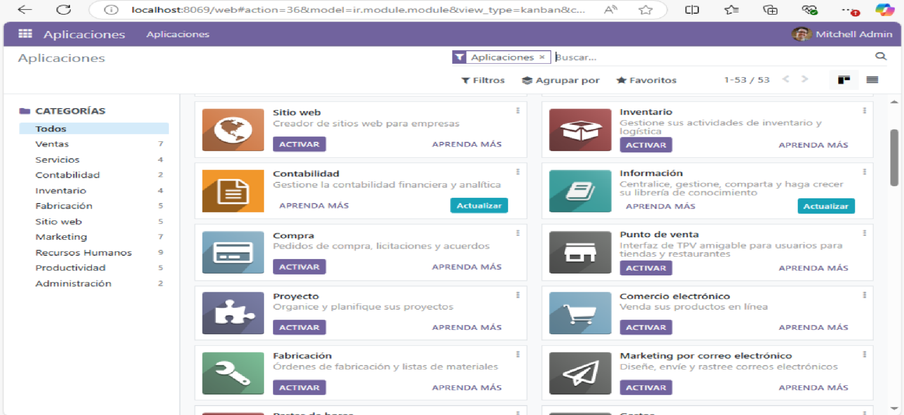
Una vez elegimos la temática, colores y distribución de nuestra página, la guardamos y obtendremos una vista previa del resultado.
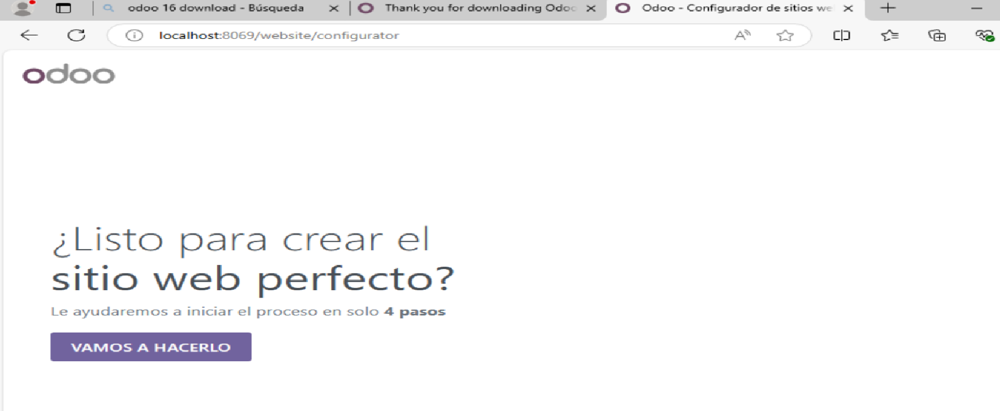 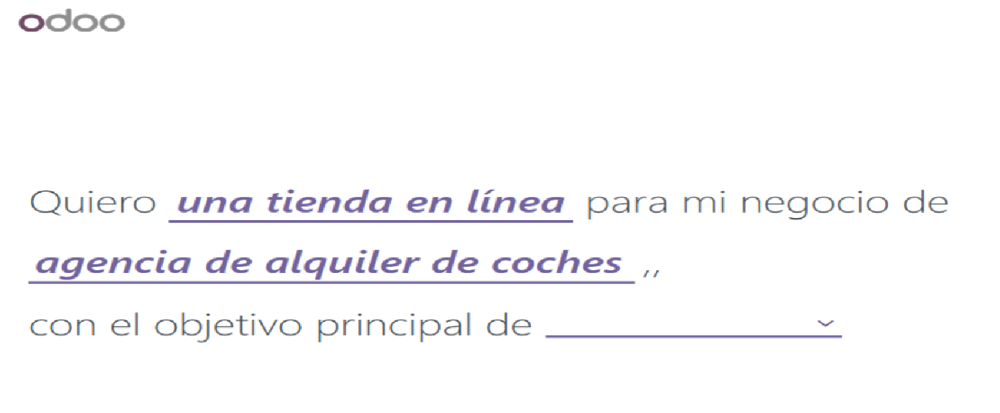 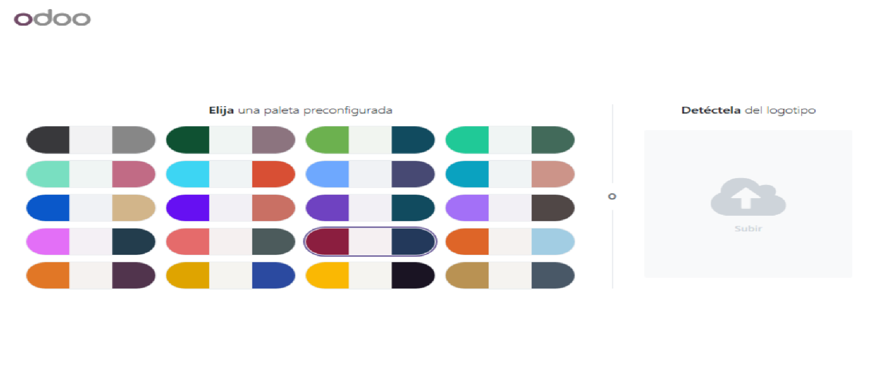 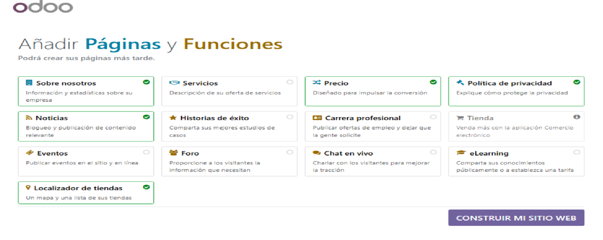En este caso hemos elegido un módulo de comercio electrónico que incluye una tienda y planes de precios. Este módulo permite registrar en la base de datos las compras, cantidades y precios, facilitando enormemente la gestión de ventas y edición de la web.
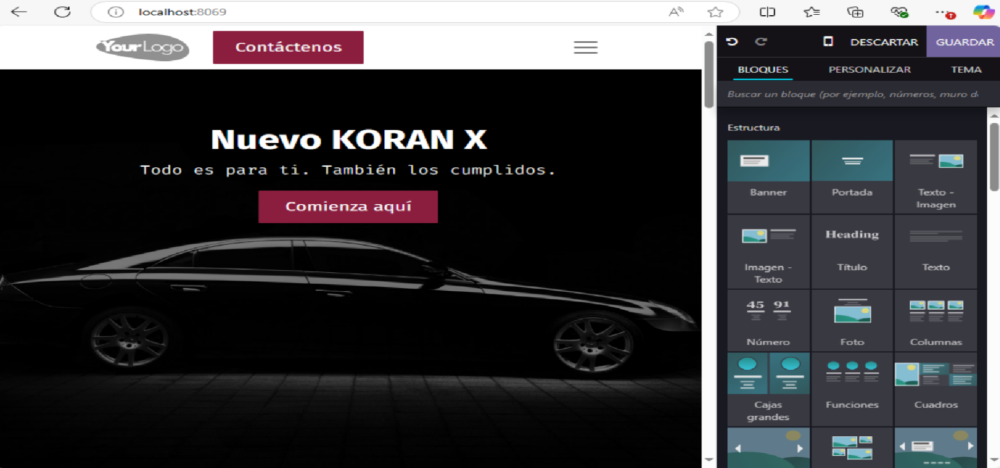 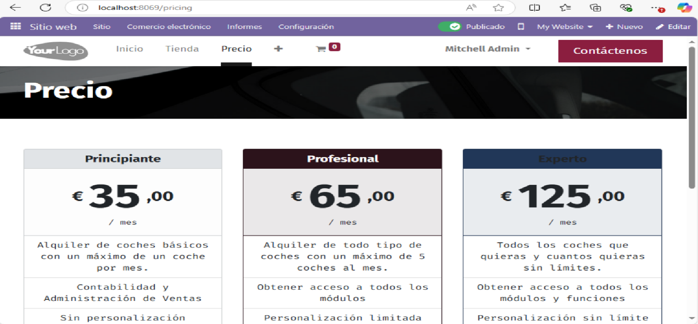Para volver al menú de módulos, se debe hacer clic en el icono de cuadrados arriba a la izquierda y seleccionar "Aplicaciones" o "Sitio web" para volver a la página principal.
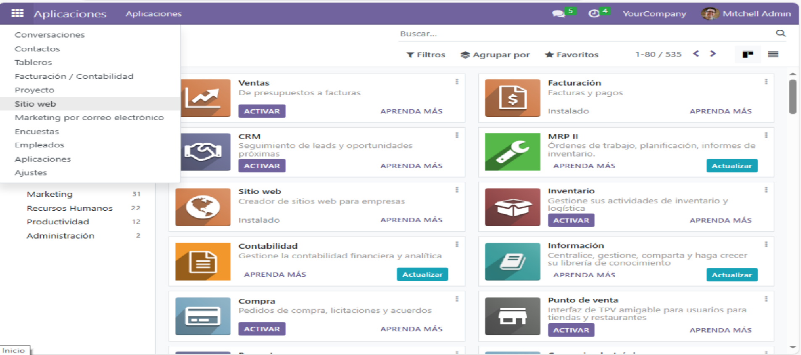Para realizar un backup accedemos a: http://localhost:8069/web/database/manager e iniciamos sesión.
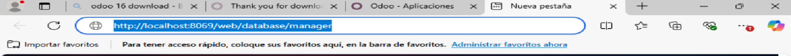Una vez dentro, seleccionamos la base de datos deseada y hacemos clic en el botón Backup.
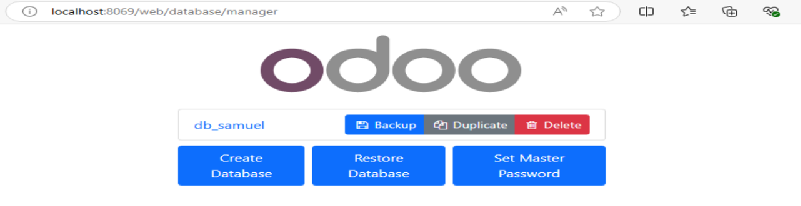El sistema nos pedirá:
Tras completar el formulario, se descargará el archivo con la copia de seguridad.
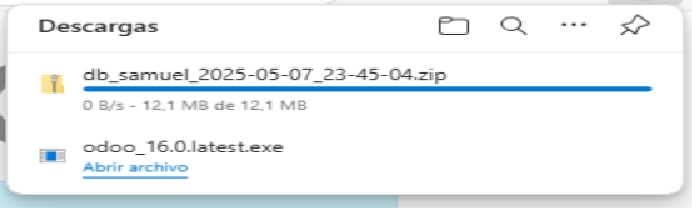Si necesitamos restaurar una base de datos, vamos de nuevo a http://localhost:8069/web/database/manager y pulsamos en "Restore Database".
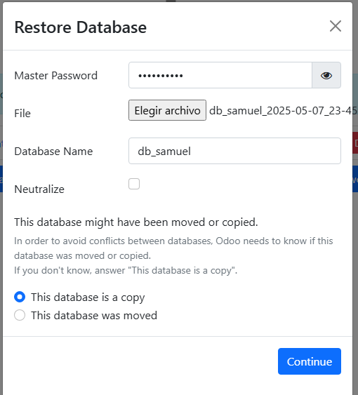Introducimos la contraseña master, subimos el archivo de backup, damos un nuevo nombre a la base de datos y completamos el proceso. La base de datos quedará restaurada correctamente.
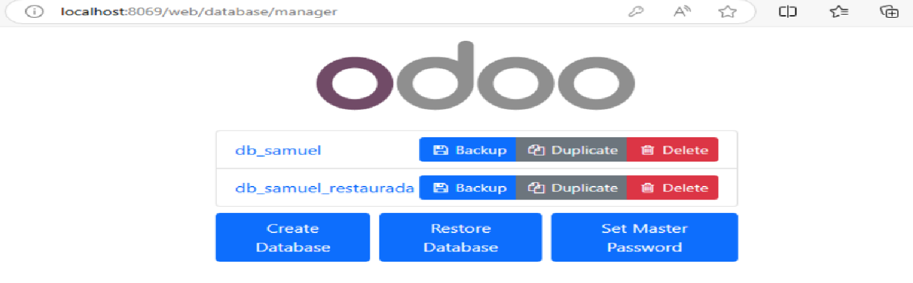